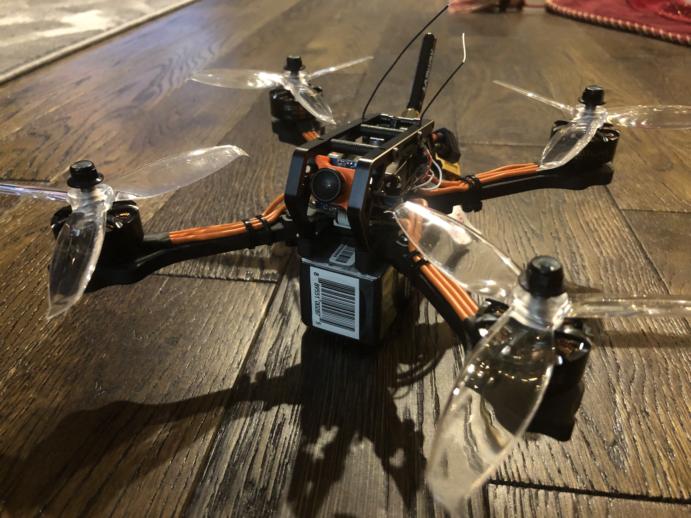

Drones are becoming more and more common within the general consumer market. You can currently go to Best Buy and purchase a DJI Photo drone that everything needed for flight for approximately $400. Even Amazon is designing drones for a delivery method of small packages. However, both these drones have advanced obstacle avoidance sensors and software that limits the drone in some way or another; plus, the DJI drones are not FPV even though they have a very nice camera. When it comes to FPV drones, they normally don’t have software that limits what they can do. They also normally don’t have sensors other than a gyro and accelerometer; however, there are other modules some pilots add, like GPS, do assist in their activities. Because of the software and lack of sensors, pilots have no restrictions in what they can make the drone aerodynamically do. They can put the drone in any orientation they want, and it is up to the pilot, and only the pilot, to make sure it comes out of the sky in one piece. This gives them the ability to maneuver the drone in ways and in places where other drones cannot go.
In general, there are 3 types of flying styles that will affect components in the drone and how you configure it. These types are:
Although each drone will have unique qualities to it, there is nothing to prevent you from doing more than one, or even all of these different flying styles with the same drone.
Flying a drone in first person is a pretty unique experience that allows the pilot to see the environment in a different way. There may only be a couple other ways to achieve the same view that a drone can give you. This is one reason why there are being used in movies and TV commercials more and more.
In addition to being able to see the environment in a bird’s eye view; once you start to learn freestyle tricks, the hobby becomes even more fun. You constantly want to learn new tricks and find new ways to tie those tricks together. This is what freestyle is all about and why it is one of the most popular forms of drone flying.
One of my proudest accomplishment in the FPV drone hobby, so far, is simply getting better with each flight and being able to handle and adapt to unforeseen situations. When first starting out, many pilots struggle trying to control the drone with no autopilot like features. This was the case for me because flying a drone that has no sense of how its moving requires the pilot to constantly make micro movements on the control sticks. The only way for these movements to start feeling natural, to where you don’t even notice them, and so where you can anticipate them before they happen is with many flight hours.
This is a picture of the first drone I bought. This was taken when it was brand new and never flown. It has since had some work done to it. The picture is a link to where I bought it; however, it has been discontinued.
Sometimes what keeps people from being able to join a hobby is the initial cost. While many products in this Drone can be very expensive, there are products that are more cost effective. Below is a chart to give you an idea of what they buy in to this to fly an FPV drone.
| Product Type | Drone Price | Controller Price | Goggle Price |
|---|---|---|---|
| Top of the line Product | $260 - $500 | $300 - $400 | $450 - $600 |
| Average Product | $160 - $260 | $200 - $300 | $200 - $450 |
| Tight Budget Product | $70 - $160 | $100 - $200 | $80 - $200 |
Here is a helpful beginner's guide to FPV Multirotors.
This explains topics that include what a FPV Multirotor is, different kind of drone/flying styles there are,
how the drone works, and the different components that make up the multirotor.
A Beginner’s Guide to FPV
If your looking for a buyers guide to cheapest, best, or even average drone parts,
I often times look at this reviewer's website. He has used all these products and reviewing products
like these is his full time job. Most of the products he lists will be suitable for most drone pilots.
FPV Know-It-All
Thank you for taking the time to look at My Favorite Hobby!